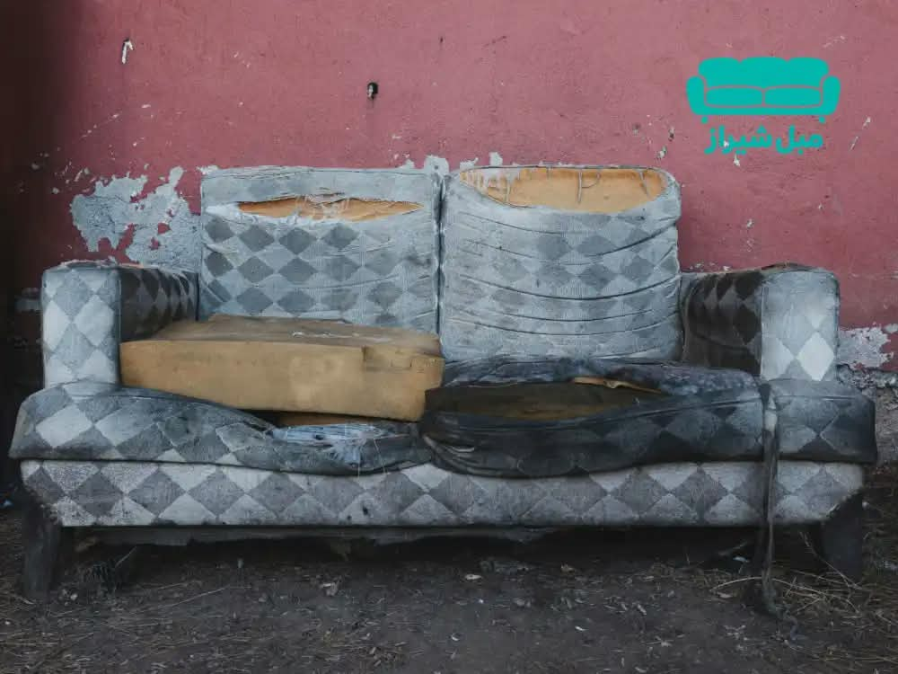
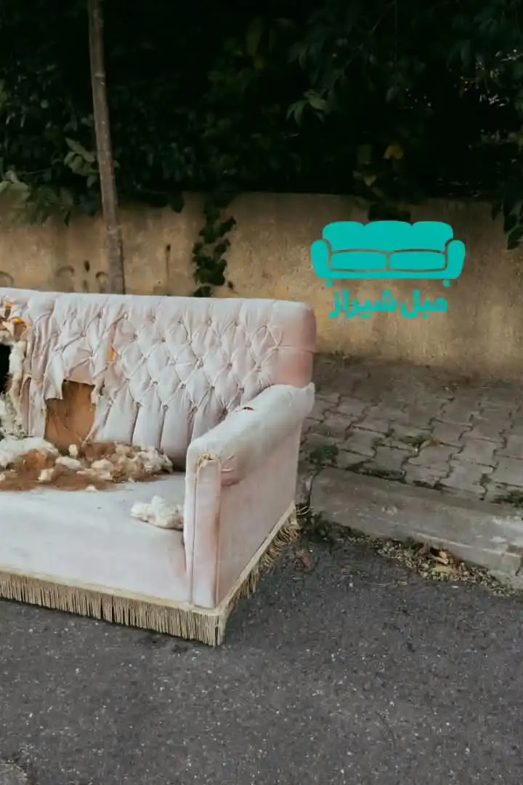
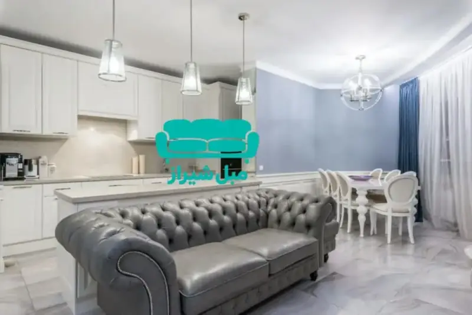
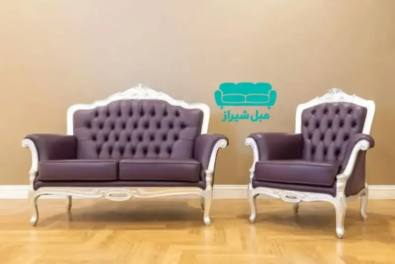
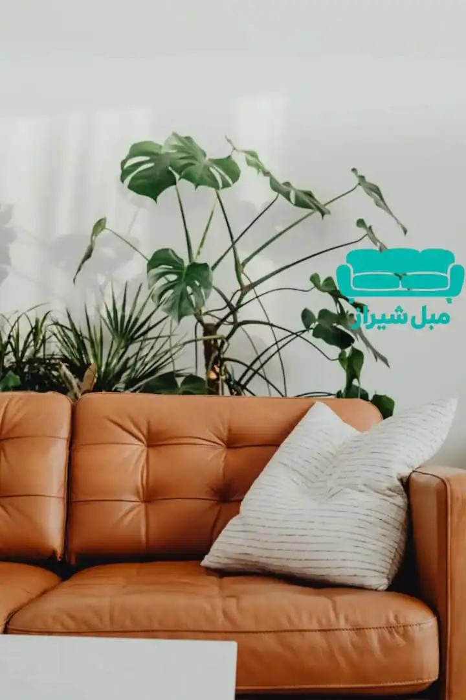
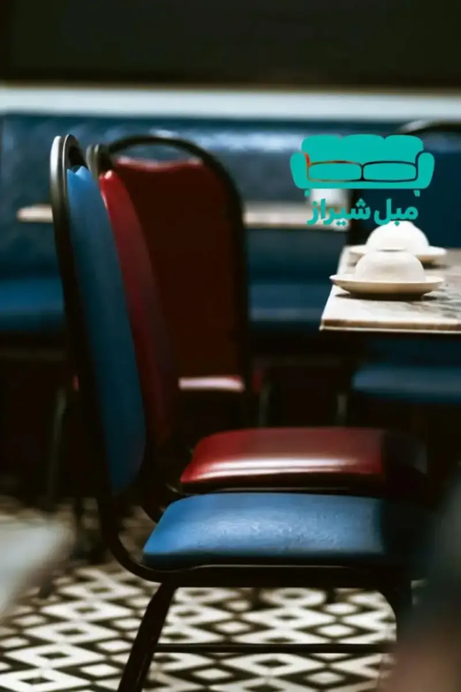
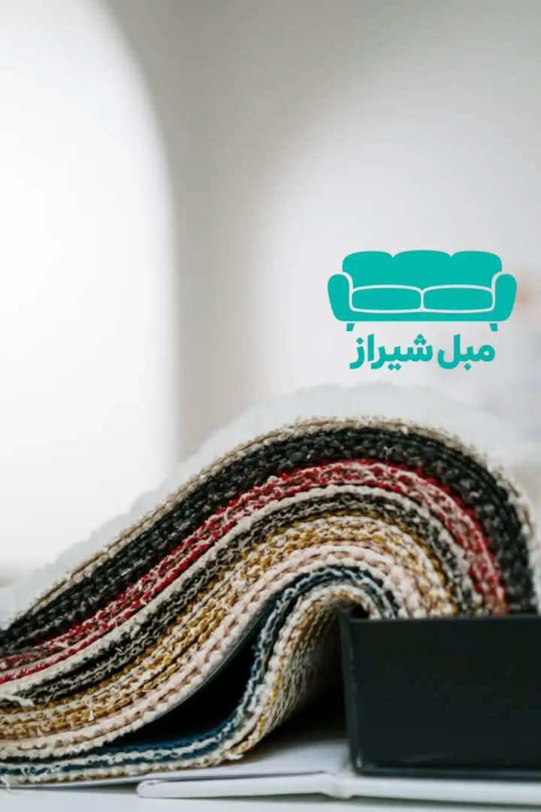
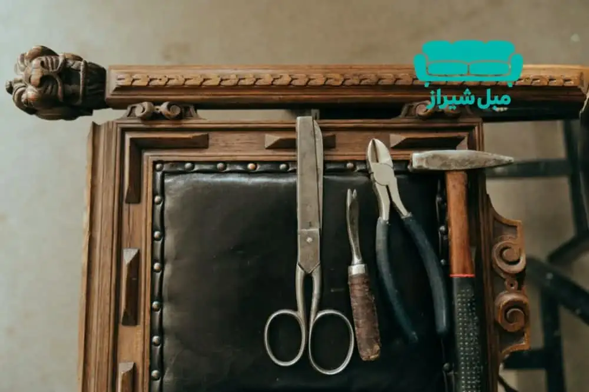

مبلها فقط یک تکه اثاثیه نیستند؛ آنها قلب تپنده خانههای ما هستند
جایی که بعد از یک روز طولانی کار، خودمان را روی آن رها میکنیم، جایی که دور هم جمع میشویم و خاطره میسازیم. اما با گذشت زمان، حتی باکیفیتترین مبلها هم دچار فرسودگی میشوند. پارچهها رنگ میبازند، اسفنجها فرومیروند و اسکلت چوبی به مرور زمان لق میشود. در این لحظه، بسیاری از ما با یک دوراهی بزرگ روبرو میشویم: آیا باید مبل قدیمی را دور بیندازیم و یک مبل نو بخریم، یا آن را تعمیر کنیم؟
با توجه به افزایش سرسامآور قیمت مبلمان در سالهای اخیر، تعمیر مبل در شیراز به یک انتخاب هوشمندانه و اقتصادی تبدیل شده است. در این راهنمای جامع، قصد داریم تمام جوانب تعمیر مبل را بررسی کنیم. از نشانههایی که میگویند وقت تعمیر رسیده، تا راهنمای گامبهگام تعمیر انواع مبل، انتخاب پارچه و فوم مناسب، برآورد هزینهها و نکات طلایی برای افزایش عمر مبل. هدف ما این است که به شما کمک کنیم تا با یک تصمیم درست، مبل قدیمیتان را به روزهای اوجش برگردانید و در هزینههای خود صرفهجویی کنید.
چرا تعمیر مبل بهصرفهتر از خرید مبل جدید است؟
شاید برای بسیاری از ما، خرید یک مبل نو جذابتر از تعمیر مبل قدیمی به نظر برسد. اما وقتی عمیقتر به این موضوع نگاه میکنیم، متوجه میشویم که تعمیر مبل مزایای بیشماری دارد که آن را به یک انتخاب هوشمندانه تبدیل میکند. در ادامه به مهمترین این دلایل اشاره میکنیم:
۱. صرفهجویی اقتصادی چشمگیر
مهمترین و ملموسترین دلیل، بحث هزینه است. با توجه به تورم و افزایش قیمت مواد اولیه، قیمت یک مبل نو باکیفیت در بازار امروز بسیار بالاست. در حالی که شما میتوانید با هزینهای بهمراتب کمتر، مبل قدیمی خود را بهطور کامل بازسازی کنید. بهعنوان مثال، هزینه تعمیر کامل یک مبل چستر سهنفره ممکن است یکسوم تا یکچهارم قیمت خرید یک مبل چستر نو و باکیفیت باشد. این یعنی شما با صرفهجویی در هزینه، میتوانید آن را صرف چیزهای مهمتر کنید.
۲. حفظ اصالت و خاطرات
بسیاری از مبلهای قدیمی، بهویژه مبلهای استیل و چستر، ارزش Sentimental (عاطفی) بالایی برای صاحبانشان دارند. شاید مبل یادگار پدربزرگ و مادربزرگ باشد یا در خانهای که سالها در آن زندگی کردهاید، خاطرات زیادی را در خود جای داده باشد. با تعمیر مبل، شما هم آن خاطرات را حفظ میکنید و هم یک مبل با اصالت و منحصربهفرد خواهید داشت.
۳. دوستدار محیط زیست
در دنیای امروز که بحث حفاظت از محیط زیست بسیار مهم است، تعمیر مبل یک اقدام دوستدار محیط زیست محسوب میشود. با تعمیر بهجای دور انداختن، شما از تولید زبالههای حجیم جلوگیری میکنید و به کاهش مصرف منابع طبیعی مانند چوب و پارچه کمک میکنید. این کار یک گام کوچک اما مؤثر در راستای زندگی پایدار است.
۴. تغییر دکوراسیون بدون خرید مبل جدید
یکی از جذابترین مزایای تعمیر مبل، امکان تغییر ظاهر آن است. شما میتوانید با تعویض پارچه مبل، رنگ و طرح آن را بهکلی تغییر دهید و آن را با دکوراسیون جدید خانه هماهنگ کنید. این کار بسیار مقرونبهصرفهتر از خرید یک مبل جدید است و به شما این امکان را میدهد که بدون هزینههای سنگین، فضای خانه را دگرگون کنید.
۵. کیفیت بالاتر نسبت به مبلهای ارزانقیمت بازار
مبلهای جدید و ارزانقیمت موجود در بازار معمولاً از مواد اولیه بیکیفیت و اسکلتهای ضعیف ساخته میشوند و عمر کوتاهی دارند. اما با تعمیر مبل قدیمی خود، شما میتوانید از اسکلت اصلی که اغلب از چوبهای محکم و باکیفیت ساخته شده، استفاده کنید و تنها رویه و اسفنج آن را با مواد مرغوب تعویض کنید. نتیجه، یک مبل با دوام و باکیفیت خواهد بود که سالها برای شما کار میکند.

نشانههای هشداردهنده؛ چه زمانی باید مبل را تعمیر کنیم؟
تشخیص زمان مناسب برای تعمیر مبل، اولین و مهمترین قدم در مسیر بازگرداندن زیبایی و راحتی به خانه است. بسیاری از افراد تنها زمانی به فکر تعمیر میافتند که مبلشان بهکلی از کار افتاده باشد، در حالی که با شناسایی زودهنگام نشانهها میتوان از خرابیهای بزرگتر و هزینههای سنگینتر جلوگیری کرد. در ادامه، مهمترین نشانههایی که میگویند مبل شما نیاز به تعمیر دارد را بررسی میکنیم.
۱. نشانههای ظاهری
اولین نشانهها معمولاً در ظاهر مبل بروز میکنند. این نشانهها را میتوان به راحتی با چشم مشاهده کرد:
- نخنما شدن پارچه: اگر پارچه مبل در لبهها، دستهها یا نشیمنگاه شروع به نخنما شدن کرده، یعنی بافت پارچه در حال از هم پاشیدن است. این مشکل ممکن است در ابتدا کوچک به نظر برسد، اما به مرور زمان به پارگیهای بزرگ تبدیل میشود.
- کدر شدن رنگ و لکههای عمیق: با گذشت زمان، رنگ پارچه مبل کدر میشود و لکههای عمیقی مانند لکههای چای، قهوه یا جوهر روی آن باقی میماند که با شامپو فرش معمولی پاک نمیشوند. این نشانهها میگویند که یا باید پارچه را شستوشوی تخصصی کرد یا به فکر تعویض آن بود.
- پارگی و سوراخ: پارگیهای کوچک، مخصوصاً در قسمتهایی که بیشتر در معرض سایش هستند (مثل لبه دستهها)، اگر ترمیم نشوند، به سرعت بزرگتر شده و ظاهر مبل را خراب میکنند.
- فرورفتگی نامتقارن: اگر مبل شما در یک سمت بیشتر از سمت دیگر فرورفته، این نشانهای از ضعف در اسفنج یا فنرهای آن قسمت است. این مشکل در درازمدت باعث میشود که مبل شکل و فرم اصلی خود را از دست بدهد.
۲. نشانههای ساختاری
مشکلات ساختاری معمولاً خطرناکتر از مشکلات ظاهری هستند، زیرا به اسکلت اصلی مبل مربوط میشوند. این نشانهها عبارتند از:
- صدای جیرجیر یا تقتق: اگر هنگام نشستن روی مبل، صدای جیرجیر یا تقتق میشنوید، یعنی اسکلت چوبی یا اتصالات آن شل شده است. این صداها نشان میدهند که مبل در حال تحمل فشار غیرمعمول است و ممکن است بهزودی دچار شکستگی شود.
- لقی و حرکت غیرعادی: اگر مبل شما روی زمین کاملاً ثابت نیست و تکان میخورد، یا اگر میتوانید دستهها را به راحتی حرکت دهید، یعنی اتصالات پیچ و مهرهای یا چوبی آن لق شدهاند.
- فرورفتگی فنرها: اگر روی مبل مینشینید و فنرها بهطور کامل زیر وزن شما فرو میروند و بعد از بلند شدن، به حالت اول برنمیگردند، یعنی فنرها خاصیت ارتجاعی خود را از دست دادهاند و نیاز به تعویض دارند.
- نشستن اسکلت: در موارد شدید، ممکن است پایههای مبل ترک بخورند یا خرد شوند. این مشکل نیاز به تعمیر فوری دارد، زیرا ممکن است به ایمنی افراد آسیب بزند.
۳. نشانههای عملکردی
این نشانهها بیشتر به حس و تجربه شما از نشستن روی مبل مربوط میشوند:
- از دست رفتن راحتی: اگر بعد از چند دقیقه نشستن روی مبل احساس راحتی نمیکنید و مدام نیاز به جابهجا شدن دارید، یعنی اسفنج یا فوم مبل کیفیت خود را از دست داده است.
- عدم بازگشت به شکل اول: اگر بعد از بلند شدن از روی مبل، جای نشستن شما روی آن باقی میماند و به حالت اول برنمیگردد، این نشانهای واضح از فرسودگی فوم است.
- بوی نامطبوع: گاهی اوقات، به دلیل نفوذ رطوبت یا کپکزدگی در داخل مبل، بوی نامطبوعی به مشام میرسد. این مشکل نه تنها آزاردهنده است، بلکه میتواند برای سلامتی مضر باشد و نیاز به تعمیر و بازسازی اساسی دارد.
چه زمانی باید اقدام کنیم؟
بهطور کلی، اگر یکی از نشانههای بالا را مشاهده کردید، بهتر است هرچه زودتر با یک کارگاه تعمیرات مبل معتبر تماس بگیرید. تعمیر بهموقع نه تنها هزینهها را کاهش میدهد، بلکه از آسیبهای بیشتر به اسکلت مبل جلوگیری میکند. بهیاد داشته باشید که یک مبل سالم، نه تنها زیبایی خانه شما را افزایش میدهد، بلکه میتواند سالها بدون مشکل برای شما کار کند.

راهنمای گامبهگام تعمیر انواع مبل
حالا که با نشانههای نیاز به تعمیر آشنا شدید، وقت آن است که با فرآیند واقعی تعمیر انواع مبل آشنا شوید. هر نوع مبل، بسته به ساختار و جنس مواد اولیهاش، روش تعمیر مخصوص به خود را دارد. در این بخش، بهصورت گامبهگام و تخصصی، نحوه تعمیر چهار مدل مبل پرطرفدار را بررسی میکنیم.
۳.۱. تعمیر مبل چستر
مبل چستر به دلیل ظاهر کلاسیک، دگمهکوبیهای تودرتو و لمسهدوزیهای خاصش، یکی از محبوبترین و در عین حال پیچیدهترین مبلها برای تعمیر است. تعمیر این مبل نیاز به تخصص و دقت بالایی دارد، زیرا هر اشتباه کوچک میتواند ظاهر نهایی را خراب کند.
مراحل تعمیر مبل چستر:
- باز کردن پارچه: ابتدا پارچه قدیمی با دقت از روی اسکلت جدا میشود. این کار باید بهگونهای انجام شود که به چوب یا اسفنج آسیب نرسد. در این مرحله، دگمههای تودرتو و لمسهها نیز باز میشوند.
- بررسی اسکلت و تعمیر آن: پس از باز کردن پارچه، اسکلت چوبی مبل به دقت بررسی میشود. اگر چوب ترک خورده یا شکسته باشد، با چسب چوب مخصوص و پیچهای تقویتی ترمیم میشود. در صورت نیاز، کل اسکلت بازسازی میشود.
- تعویض اسفنج و فوم: اسفنجهای قدیمی که خاصیت ارتجاعی خود را از دست دادهاند، با فوم سرد یا اسفنج با دانسیته بالا تعویض میشوند. برای مبل چستر، معمولاً از فوم سرد استفاده میشود تا فرم دگمهکوبی حفظ شود.
- پارچهکشی و دگمهکوبی: این مرحله حساسترین بخش کار است. پارچه جدید با دقت کشیده میشود و دگمههای تودرتو با استفاده از سوزن مخصوص و نخ محکم، مجدداً دوخته میشوند. لمسهدوزیها نیز باید دقیقاً مطابق طرح اصلی انجام شود.
- نصب پایهها و تکمیل کار: در نهایت، پایههای مبل نصب میشوند و کارگاه تعمیرات، مبل را تحویل مشتری میدهد.
نکته مهم: تعمیر مبل چستر بدون تجربه و تخصص کافی، ممکن است به اسکلت و پارچه آسیب بزند. بنابراین، حتماً این کار را به یک کارگاه معتبر بسپارید.

۳.۲. تعمیر مبل استیل
مبل استیل به دلیل اسکلت چوبی محکم و تزئینات خاصش، یکی از پرطرفدارترین مبلهای ایرانی است. تعمیر این مبل معمولاً شامل ترمیم اسکلت، رنگکاری و رویهکوبی است.
مراحل تعمیر مبل استیل:
- بررسی و ترمیم اسکلت چوبی: ابتدا اسکلت مبل به دقت بررسی میشود. اگر چوب ترک خورده یا شکسته باشد، با چسب چوب و پیچهای تقویتی ترمیم میشود. در موارد شدید، ممکن است نیاز به تعویض کامل یک قطعه چوبی باشد.
- رنگکاری و ترمیم رنگ: پس از ترمیم اسکلت، اگر رنگ چوب آسیب دیده باشد، با رنگهای مخصوص چوب و قلمگیری، رنگآمیزی مجدد انجام میشود. این کار باعث میشود مبل ظاهری نو و شیک به خود بگیرد.
- تعویض اسفنج و فوم: اسفنجهای قدیمی با فوم سرد یا اسفنج یورولوکس تعویض میشوند. برای مبل استیل، معمولاً از اسفنج با دانسیته بالا استفاده میشود تا راحتی و دوام بیشتری داشته باشد.
- رویهکوبی با پارچه جدید: پارچه جدید با دقت روی اسکلت کشیده میشود و با منگنه یا چسب مخصوص محکم میشود. در این مرحله، باید دقت کرد که پارچه کاملاً صاف و بدون چینخوردگی باشد.
- نصب تزئینات و تکمیل: در نهایت، تزئینات مبل (مانند منگولهها، نوارهای تزئینی و...) نصب میشوند و مبل آماده تحویل میشود.
نکته مهم: تعمیر مبل استیل معمولاً هزینه کمتری نسبت به مبل چستر دارد، زیرا اسکلت آن معمولاً سالمتر است و فقط نیاز به رویهکوبی و رنگکاری دارد.

۳.۳. تعمیر مبل راحتی
مبل راحتی به دلیل استفاده روزمره و نشستنهای طولانی، بیشتر در معرض فرسودگی قرار دارد. تعمیر این نوع مبل معمولاً شامل رفع فرورفتگی، تعویض فوم و ترمیم پارگیها است.
مراحل تعمیر مبل راحتی:
- بررسی و رفع فرورفتگی: ابتدا علت فرورفتگی مشخص میشود. اگر فرورفتگی به دلیل ضعف اسفنج باشد، اسفنج تعویض میشود. اگر به دلیل شکستگی فنرها باشد، فنرها ترمیم یا تعویض میشوند.
- تعویض فوم: فومهای قدیمی که خاصیت ارتجاعی خود را از دست دادهاند، با فوم سرد یا اسفنج نرم تعویض میشوند. برای مبل راحتی، معمولاً از فوم سرد استفاده میشود تا راحتی بیشتری داشته باشد.
- ترمیم پارگی پارچه: اگر پارچه مبل دچار پارگی شده باشد، با نخ و سوزن مخصوص ترمیم میشود. در موارد شدید، ممکن است نیاز به تعویض کامل پارچه باشد.
- محکم کردن پایههای لق: پایههای مبل راحتی معمولاً با پیچ و مهره به اسکلت متصل میشوند. اگر پایهها لق شده باشند، با آچار و پیچگوشتی محکم میشوند.
نکته مهم: بسیاری از تعمیرات مبل راحتی را میتوان در منزل نیز انجام داد، اما برای تعمیرات اساسی، بهتر است به کارگاه مراجعه کنید.

۳.۴. تعمیر صندلی ناهارخوری
صندلیهای ناهارخوری به دلیل استفاده مکرر و جابهجاییهای زیاد، بیشتر در معرض آسیبهایی مانند لقی پیچها، شکستگی پایه و پارگی روکش قرار میگیرند.
مراحل تعمیر صندلی ناهارخوری:
- بررسی و محکم کردن پیچها: ابتدا تمام پیچها و مهرههای صندلی بررسی و در صورت لزوم محکم میشوند. این کار سادهترین و مؤثرترین راه برای رفع لقی صندلی است.
- ترمیم پایههای شکسته: اگر پایه صندلی شکسته باشد، با چسب چوب و پیچهای تقویتی ترمیم میشود. در موارد شدید، ممکن است نیاز به تعویض پایه باشد.
- تعویض روکش: اگر روکش صندلی دچار پارگی یا فرسودگی شده باشد، با پارچه جدید تعویض میشود. این کار معمولاً با استفاده از منگنه یا چسب مخصوص انجام میشود.
- رنگآمیزی مجدد: اگر اسکلت چوبی صندلی رنگپریدگی دارد، با رنگ مخصوص چوب، رنگآمیزی مجدد انجام میشود.
نکته مهم: تعمیر صندلی ناهارخوری معمولاً سادهتر و ارزانتر از سایر مبلمان است و میتوان آن را در منزل نیز انجام داد.

راهنمای انتخاب پارچه و فوم مناسب
انتخاب پارچه و فوم مناسب، یکی از مهمترین مراحل در تعمیر مبل است. این انتخاب نه تنها بر زیبایی و ظاهر مبل تأثیر میگذارد، بلکه بر راحتی، دوام و عمر مفید آن نیز نقش بسزایی دارد. در این بخش، به بررسی انواع پارچه و فوم و نکات مهم در انتخاب آنها میپردازیم.
انتخاب پارچه مناسب
پارچه مبل باید بر اساس سبک زندگی، سلیقه و بودجه شما انتخاب شود. در بازار، انواع مختلفی از پارچهها وجود دارد که هر کدام مزایا و معایب خاص خود را دارند:
- پارچههای مخمل: این پارچهها ظاهری لوکس و شیک به مبل میدهند و برای مبلهای کلاسیک و چستر بسیار مناسب هستند. اما مخملها معمولاً لکهها را به خود جذب میکنند و تمیز کردن آنها کمی دشوار است. برای مناطقی که کمتر در معرض کثیفی هستند، انتخاب خوبی هستند.
- پارچههای چرم: چرم طبیعی یا مصنوعی، دوام بسیار بالایی دارد و تمیز کردن آن بسیار آسان است. مبلهای چرمی برای فضاهای مدرن و مینیمال عالی هستند. اما چرم در تابستان گرم و در زمستان سرد میشود و ممکن است برای همه راحت نباشد.
- پارچههای ترک (کاناپهای): این پارچهها از الیاف مصنوعی ساخته میشوند و بسیار مقاوم و بادوام هستند. آنها در برابر لکه، آب و سایش مقاومت خوبی دارند و برای خانوادههایی که کودکان یا حیوانات خانگی دارند، انتخاب مناسبی هستند.
- پارچههای کتان و پنبه: این پارچهها طبیعی، نفسگیر و راحت هستند. اما ممکن است زودتر چرک شوند و نیاز به شستوشوی مکرر داشته باشند. برای مبلهای راحتی و فضاهای گرم و صمیمی مناسب هستند.
- پارچههای ضدلک و ضدآب: این پارچهها با پوشش نانو یا مواد شیمیایی مخصوص، در برابر نفوذ مایعات و لکهها مقاوم میشوند. برای مبلهایی که در معرض استفاده زیاد هستند، انتخاب هوشمندانهای هستند.
انتخاب فوم مناسب
فوم یا اسفنج، قلب تپنده راحتی مبل است. انتخاب فوم نامناسب میتواند باعث فرورفتگی سریع، عدم بازگشت به شکل اول و کاهش راحتی شود. در ادامه به بررسی انواع فوم میپردازیم:
- فوم سرد (Cold Cure Foam): این فومها با فرآیند شیمیایی خاصی تولید میشوند و بسیار بادوام و باکیفیت هستند. آنها خاصیت ارتجاعی بالایی دارند و بهندرت فرومیروند. برای مبلهای چستر و استیل که نیاز به حفظ فرم دارند، انتخاب ایدهآلی هستند.
- اسفنج یورولوکس (Urolux): این اسفنجها نرمتر از فوم سرد هستند و برای مبلهای راحتی و کوسنها مناسبترند. آنها راحتی بیشتری فراهم میکنند اما ممکن است زودتر فرورفتگی پیدا کنند.
- فوم با دانسیته بالا: دانسیته فوم نشاندهنده وزن آن در واحد حجم است. هرچه دانسیته بالاتر باشد، فوم سنگینتر و بادوامتر است. برای مبلهایی که زیاد استفاده میشوند، فوم با دانسیته ۳۰ تا ۴۰ مناسب است.
- فوم قالبی (Molded Foam): این فومها به شکل خاصی قالبگیری میشوند و برای مبلهای خاص و طراحیهای منحصربهفرد استفاده میشوند. معمولاً گرانتر هستند اما دوام و راحتی بالایی دارند.
نکات مهم در انتخاب پارچه و فوم
- تطابق با سبک دکوراسیون: پارچه و فوم انتخابی باید با سبک کلی دکوراسیون خانه هماهنگ باشد.
- توجه به کاربری: اگر مبل در محیط پرتردد قرار دارد، پارچههای مقاوم و فوم با دانسیته بالا انتخاب کنید.
- مشاوره با کارشناس: حتماً با یک کارگاه تعمیرات مبل معتبر مشورت کنید تا با توجه به بودجه و نیاز شما، بهترین گزینه را پیشنهاد دهند.
- کیفیت را فدای قیمت نکنید: انتخاب پارچه و فوم ارزانقیمت ممکن است در کوتاهمدت به صرفه باشد، اما در بلندمدت هزینههای بیشتری به همراه دارد.

هزینه تعمیر مبل در شیراز (۱۴۰۵)
یکی از مهمترین سوالات مشتریان قبل از سفارش تعمیر مبل، هزینه آن است. در این بخش، عوامل مؤثر بر قیمت و تعرفه تقریبی خدمات تعمیر مبل در شیراز را بررسی میکنیم.
عوامل مؤثر بر هزینه تعمیر مبل
قیمت تعمیر مبل یک عدد ثابت نیست و به عوامل زیر بستگی دارد:
- نوع مبل: مبلهای چستر و استیل به دلیل ساختار پیچیدهتر و دگمهکوبی، دستمزد بالاتری نسبت به مبلهای راحتی دارند.
- میزان خرابی: اگر فقط پارچه آسیب دیده باشد، هزینه کمتر است. اما اگر اسکلت چوبی، فنرها و چوببندی هم آسیب دیده باشند، هزینه بهطور قابلتوجهی افزایش مییابد.
- نوع پارچه و متریال: پارچههای ایرانی ارزانتر هستند، اما پارچههای خارجی و ضدلک قیمت بالاتری دارند. همچنین استفاده از فوم باکیفیت و فنرهای استاندارد، هزینه نهایی را افزایش میدهد.
- دستمزد کارگاه: هر کارگاهی بسته به تجربه، تخصص و کیفیت کارش، دستمزد متفاوتی میگیرد. کارگاههای حرفهای مانند «تعمیرات مبل شیراز» با وجود دستمزد منصفانه، کیفیت بالاتری ارائه میدهند.
تعرفه تقریبی تعمیرات مبل در شیراز (۱۴۰۵)
این قیمتها تقریبی هستند و بسته به نوع مبل و میزان کار میتوانند تغییر کنند. برای قیمت دقیق، حتماً عکس مبلتان را به واتساپ ما بفرستید.
| نوع خدمت | بازه قیمت (تومان) |
|---|---|
| تعمیر مبل راحتی ۷-۸ نفره | ۱۵,۰۰۰,۰۰۰ تا ۲۵,۰۰۰,۰۰۰ |
| تعمیر مبل استیل ۹ نفره | ۱۸,۰۰۰,۰۰۰ تا ۳۰,۰۰۰,۰۰۰ |
| تعمیر مبل چستر ۳ نفره | ۱۵,۰۰۰,۰۰۰ تا ۲۵,۰۰۰,۰۰۰ |
| تعویض پارچه مبل استیل ۹ نفره (بدون پارچه) | ۴,۰۰۰,۰۰۰ تا ۶,۵۰۰,۰۰۰ |
| تعویض پارچه مبل راحتی ۷ نفره (بدون پارچه) | ۳,۵۰۰,۰۰۰ تا ۵,۵۰۰,۰۰۰ |
| تعمیر صندلی ناهارخوری (هر عدد) | ۱,۵۰۰,۰۰۰ تا ۲,۵۰۰,۰۰۰ |
| تعمیر لقی صندلی ناهارخوری | از ۸۰۰,۰۰۰ |
| رنگآمیزی هر صندلی ناهارخوری | از ۲,۰۰۰,۰۰۰ |
| بازسازی کامل مبل | از ۲۵,۰۰۰,۰۰۰ |
| رنگآمیزی مبل استیل ۹ نفره | ۱۰,۰۰۰,۰۰۰ تا ۱۵,۰۰۰,۰۰۰ |
چطور هزینه تعمیر مبل را کاهش دهیم؟
- زودتر اقدام کنید: خرابی کوچک را به تعمیرات بزرگ تبدیل نکنید. تعمیر بهموقع، هزینه کمتری دارد.
- عکس بفرستید: قبل از مراجعه حضوری، عکس مبلتان را واتساپ کنید تا قیمت تقریبی را بگوییم.
- پارچه مناسب انتخاب کنید: پارچههای ایرانی با کیفیت خوب، هم ارزانتر هستند هم دوام خوبی دارند.
- از کارگاههای معتبر استفاده کنید: کارگاههای غیرحرفهای ممکن است ارزانتر باشند ولی بعداً هزینه دوبارهکاری را به شما تحمیل میکنند.

نکات طلایی برای افزایش عمر مبل
تعمیر مبل تنها راه حفظ زیبایی و کارایی آن نیست؛ بلکه با رعایت چند نکته ساده در نگهداری روزانه، میتوانید عمر مفید مبل خود را بهطور قابلتوجهی افزایش دهید. در ادامه به مهمترین این نکات اشاره میکنیم:
- گردگیری منظم: حداقل هفتهای یک بار، گرد و غبار روی مبل را با یک دستمال نرم و خشک پاک کنید. گرد و غبار به مرور زمان به الیاف پارچه نفوذ میکند و باعث کدر شدن و فرسودگی آن میشود.
- جاروبرقی کشیدن درزها: هفتهای یک بار با استفاده از سری مخصوص مبلمان، درزها و شکافهای مبل را جاروبرقی بکشید. این کار از تجمع گرد و غبار و ایجاد حساسیت جلوگیری میکند.
- دور نگه داشتن از نور مستقیم خورشید: نور مستقیم خورشید باعث رنگپریدگی و پوسیدگی پارچه میشود. مبل را در محلی قرار دهید که در معرض تابش مستقیم آفتاب نباشد یا از پردههای ضخیم استفاده کنید.
- فاصله از منابع حرارتی: مبل را حداقل ۳۰ سانتیمتر از شوفاژ، بخاری و شومینه دور نگه دارید. حرارت زیاد باعث خشک شدن چوب و ترک خوردن آن میشود.
- پاک کردن فوری لکهها: هر لکهای را بلافاصله با یک دستمال تمیز و مرطوب پاک کنید. برای لکههای چرب از کمی مایع ظرفشویی رقیقشده و برای لکههای رنگی از آب و سرکه استفاده کنید. هرگز از شویندههای قوی مثل وایتکس استفاده نکنید.
- استفاده از روکش محافظ: اگر مبل در محیط پرتردد قرار دارد، میتوانید از روکشهای محافظ استفاده کنید تا پارچه اصلی کمتر در معرض کثیفی و سایش قرار گیرد.
- جابهجایی اصولی: هنگام جابهجایی مبل، آن را از زمین بلند کنید و نکشید. کشیدن مبل باعث شل شدن پایهها و آسیب به اسکلت میشود.
- تعمیر بهموقع: همانطور که در بخشهای قبلی گفتیم، تعمیر بهموقع از خرابیهای بزرگتر و هزینههای سنگینتر جلوگیری میکند.
نتیجهگیری
تعمیر مبل در شیراز، یک انتخاب هوشمندانه، اقتصادی و دوستدار محیط زیست است. با توجه به افزایش قیمت مبلمان، تعمیر مبل قدیمی شما را به روزهای اوجش برمیگرداند و در هزینههای شما صرفهجویی میکند. در این مقاله، بهطور کامل با نشانههای نیاز به تعمیر، مراحل تعمیر انواع مبل، انتخاب پارچه و فوم مناسب، هزینهها و نکات نگهداری آشنا شدید.
حالا نوبت شماست. اگر مبل شما هم نیاز به تعمیر یا بازسازی دارد، همین حالا با ما تماس بگیرید. کارگاه «تعمیرات مبل شیراز» با بیش از ۷ سال سابقه، تیمی مجرب و ضمانت ۶ ماهه، آماده خدمترسانی به شماست. هدف ما فقط تعمیر نیست؛ لبخند رضایت شماست.
برای دریافت مشاوره رایگان و قیمت دقیق، کافی است عکس مبلتان را به واتساپ ما بفرستید تا در اسرع وقت پاسخگو باشیم.
📍 آدرس کارگاه: شیراز، سلطانآباد، خیابان مسکن مهر، اولین دوربرگردان سمت چپ
📞 تماس: ۰۹۰۱۳۶۴۳۴۲۸
💬 واتساپ: کلیک کنید